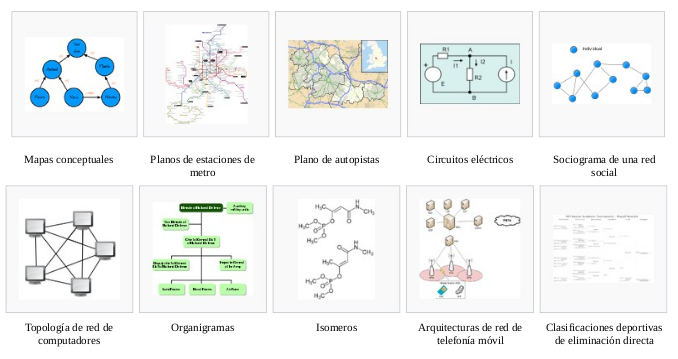

La teoría de la complejidad computacional trata de clasificar los problemas que pueden, o no pueden ser resueltos con una cantidad determinada de recursos (tiempo y memoria).
A grandes rasgos, teoría de la complejidad computacional trata de clasificar los problemas que pueden, o no pueden ser resueltos por una computadora.
Una máquina de Turing es un dispositivo teórico que manipula símbolos sobre una tira de cinta de acuerdo a una tabla de reglas.
Estudiando sus propiedades abstractas, ha servido de base para mucho desarrollo teórico en las ciencias de la computación y en la teoría de la complejidad.
Un algoritmo es un conjunto prescrito de instrucciones o reglas bien definidas, ordenadas y finitas que permiten llevar a cabo una actividad mediante pasos sucesivos que no generen dudas a quien deba hacer dicha actividad.
Dados un estado inicial y una entrada, siguiendo los pasos sucesivos se llega a un estado final.
Cuando el tiempo de ejecución de un algoritmo se puede expresar usando una fórmula polinómica, se dice que dicho problema se puede resolver en un tiempo polinómico.
Estos son "buenos" algoritmos.
Cuando el tiempo de ejecución de un algoritmo no se puede expresar usando una fórmula polinómica, se dice que dicho problema es de tiempo exponencial.
Cuando un problema solo se puede resolver mediante algoritmos exponenciales, se dice que es intratable.
La clase de complejidad NP consta de los problemas "verificables" en tiempo polinómico, es decir, dada una posible solución, esta se puede verificar en un tiempo polinómico por una máquina de Turing.
A grandes rasgos, NP corresponde a la clase de problemas que, de manera realista, se pueden verificar con una computadora.
La clase de complejidad P contiene a aquellos problemas que se pueden resolver en tiempo polinómico por una máquina de Turing.
A grandes rasgos, P corresponde a la clase de problemas que, de manera realista, se pueden resolver con una computadora.
Los problemas de clase P siempre son de clase NP (si lo podemos resolver en tiempo polinómico, también podemos verificarlo en tiempo polinómico).
La clase de complejidad NP-Completo consta de los problemas "verificables" en tiempo polinómico, pero que no se ha encontrado un algoritmo que pueda resolver dicho problema en tiempo polinómico por una máquina de Turing.
A grandes rasgos, NP-Completo corresponde a la clase de problemas que se pueden verificar de forma sencilla, pero solo se pueden resolver por fuerza bruta.
Los problemas de clase NP-Completo siempre son de clase NP.
La pregunta ¿P=NP? es uno de los 7 problemas del milenio.
Si P=NP, cualquier problema polinómicamente verificable (NP) se podría resolver polinómicamente (P).
Esto quiere decir que podríamos pues resolver los problemas de clase NP-Completo de forma polinómica.
| notación | nombre |
|---|---|
| O(1) | constante |
| O(log n) | logarítmica |
| O(n) | lineal |
| O(n log n) | lineal logarítmica |
| O(n^2) | cuadrática |
| O(2^n) | exponencial |
| O(n!) | factorial |
Una pila es un conjunto de elementos que utilizan el principio LIFO (Last In First Out), es decir, el último elemento que introdujimos será el primero en ser retirado.
Una cola es un conjunto de elementos que utilizan el principio FIFO (First In First Out), es decir, el primer elemento que introdujimos será el primero en ser retirado.

Big-O Algorithm Complexity Cheat Sheet
Curso de Khan Academy > Ciencias de la computación > Algoritmos
Sorting algorithms beginners guide
Bubble sort algorithm in JavaScript
Selection sort algorithm in javascript
How does merge sort algorithm works?
Binary search algorithm implementation in javascript
DataStructures: Implementation of Linked List in JavaScript
Doubly Linked List Implementation in JavaScript
Stacks and Queues in JavaScript
Tree Data structure in Javascript